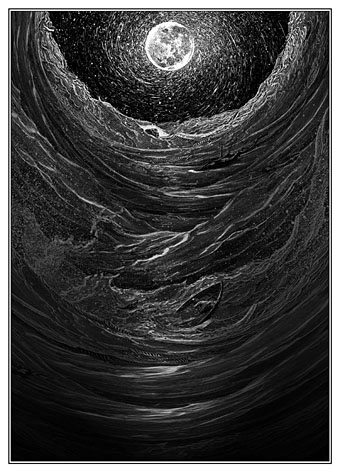

A Descent Into The Maelstrom
(published 1845)
(No theme recorded)

WE had now reached the summit of the loftiest crag. For some minutes the seemed too much exhausted to speak.
said he at length,
The "little cliff," upon whose edge he had so carelessly thrown himself down to rest that the weightier portion of his body hung over it, while he was only kept from falling by the tenure of his elbow on its extreme and slippery edge -- this "little cliff" arose, a sheer unobstructed precipice of black shining rock, some fifteen or sixteen hundred feet from the world of crags beneath us. Nothing would have tempted me to within half a dozen yards of its brink. In truth so deeply was I excited by the perilous position of my companion, that I fell at full length upon the ground, clung to the shrubs around me, and dared not even glance upward at the sky -- while I struggled in vain to divest myself of the idea that the very foundations of the mountain were in danger from the fury of the winds. It was long before I could reason myself into sufficient courage to sit up and look out into the distance.
said the , he continued, in that particularizing manner which distinguished him --
I looked dizzily, and beheld a wide expanse of ocean, whose waters wore so inky a hue as to bring at once to my mind the Nubian geographer's account of the Mare Tenebrarum. A panorama more deplorably desolate no human imagination can conceive. To the right and left, as far as the eye could reach, there lay outstretched, like ramparts of the world, lines of horridly black and beetling cliff, whose character of gloom was but the more forcibly illustrated by the surf which reared high up against its white and ghastly crest, howling and shrieking forever. Just opposite the promontory upon whose apex we were placed, and at a distance of some five or six miles out at sea, there was visible a small, bleak-looking island ; or, more properly, its position was discernible through the wilderness of surge in which it was enveloped. About two miles nearer the land, arose another of smaller size, hideously craggy and barren, and encompassed at various intervals by a cluster of dark rocks.
The appearance of the ocean, in the space between the more distant island and the shore, had something very unusual about it. Although, at the time, so strong a gale was blowing landward that a brig in the remote offing lay to under a double-reefed trysail, and constantly plunged her whole hull out of sight, still there was here nothing like a regular swell, but only a short, quick, angry cross dashing of water in every direction -- as well in the teeth of the wind as otherwise. Of foam there was little except in the immediate vicinity of the rocks.
resumed the old man,
We had now been about ten minutes upon the top of Helseggen, to which we had ascended from the interior of Lofoden, so that we had caught no glimpse of the sea until it had burst upon us from the summit. As the old man spoke, I became aware of a loud and gradually increasing sound, like the moaning of a vast herd of buffaloes upon an American prairie; and at the same moment I perceived that what seamen term the chopping character of the ocean beneath us, was rapidly changing into a current which set to the eastward. Even while I gazed, this current acquired a monstrous velocity. Each moment added to its speed -- to its headlong impetuosity. In five minutes the whole sea, as far as Vurrgh, was lashed into ungovernable fury ; but it was between Moskoe and the coast that the main uproar held its sway. Here the vast bed of the waters, seamed and scarred into a thousand conflicting channels, burst suddenly into phrensied convulsion -- heaving, boiling, hissing -- gyrating in gigantic and innumerable vortices, and all whirling and plunging on to the eastward with a rapidity which water never elsewhere assumes except in precipitous descents. In a few minutes more, there came over the scene another radical alteration. The general surface grew somewhat more smooth, and the whirlpools, one by one, disappeared, while prodigious streaks of foam became apparent where none had been seen before. These streaks, at length, spreading out to a great distance, and entering into combination, took unto themselves the gyratory motion of the subsided vortices, and seemed to form the germ of another more vast. Suddenly -- very suddenly -- this assumed a distinct and definite existence, in a circle of more than a mile in diameter. The edge of the whirl was represented by a broad belt of gleaming spray ; but no particle of this slipped into the mouth of the terrific funnel, whose interior, as far as the eye could fathom it, was a smooth, shining, and jet-black wall of water, inclined to the horizon at an angle of some forty-five degrees, speeding dizzily round and round with a swaying and sweltering motion, and sending forth to the winds an appalling voice, half shriek, half roar,
The mountain trembled to its very base, and the rock rocked. I threw myself upon my face, and clung to the scant herbage in an excess of nervous agitation.
said I at length, to the old man --
said he. "
The ordinary accounts of this vortex had by no means prepared me for what I saw. That of Jonas Ramus, which is perhaps the most circumstantial of any, cannot impart the faintest conception either of the magnificence, or of the horror of the scene -- or of the wild bewildering sense of the novel which confounds the beholder. I am not sure from what point of view the writer in question surveyed it, nor at what time ; but it could neither have been from the summit of Helseggen, nor during a storm. There are some passages of his description, nevertheless, which may be quoted for their details, although their effect is exceedingly feeble in conveying an impression of the spectacle.
he says, " In regard to the depth of the water, I could not see how this could have been ascertained at all in the immediate vicinity of the vortex. The "forty fathoms" must have reference only to portions of the channel close upon the shore either of Moskoe or Lofoden. The depth in the centre of the Moskoe-str�m must be immeasurably greater ; and no better proof of this fact is necessary than can be obtained from even the sidelong glance into the abyss of the whirl which may be had from the highest crag of Helseggen. Looking down from this pinnacle upon the howling Phlegethon below, I could not help smiling at the simplicity with which the honest Jonas Ramus records, as a matter difficult of belief, the anecdotes of the whales and the bears; for it appeared to me, in fact, a self-evident thing, that the largest ship of the line in existence, coming within the influence of that deadly attraction, could resist it as little as a feather the hurricane, and must disappear bodily and at once.
The attempts to account for the phenomenon -- some of which, I remember, seemed to me sufficiently plausible in perusal -- now wore a very different and unsatisfactory aspect. The idea generally received is that this, as well as three smaller vortices among the Ferroe islands, "have no other cause than the collision of waves rising and falling, at flux and reflux, against a ridge of rocks and shelves, which confines the water so that it precipitates itself like a cataract ; and thus the higher the flood rises, the deeper must the fall be, and the natural result of all is a whirlpool or vortex, the prodigious suction of which is sufficiently known by lesser experiments." -- These are the words of the Encyclopaedia Britannica. Kircher and others imagine that in the centre of the channel of the Maelstr�m is an abyss penetrating the globe, and issuing in some very remote part -- the Gulf of Bothnia being somewhat decidedly named in one instance. This opinion, idle in itself, was the one to which, as I gazed, my imagination most readily assented ; and, mentioning it to the guide, I was rather surprised to hear him say that, although it was the view almost universally entertained of the subject by the Norwegians, it nevertheless was not his own. As to the former notion he confessed his inability to comprehend it ; and here I agreed with him -- for, however conclusive on paper, it becomes altogether unintelligible, and even absurd, amid the thunder of the abyss.
said the old man,
I placed myself as desired, and he proceeded.
.
Key: Figures of Speech
Imagery: Language that creates a vivid picture in the mind.
Personification: Giving human qualities to inanimate objects.
Simile: A comparison using "like" or "as".
: A direct comparison without using "like" or "as".